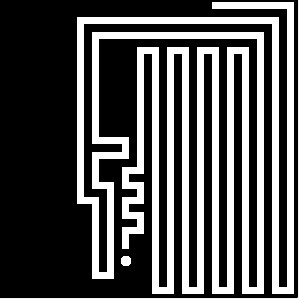

IA que automatiza o jogo Snake
Eu recriei o famoso jogo da cobrinha utilizando python e fiz uma inteligência artificial com uma rede neural artificial para jogar. A minha IA foi capaz de cobrir toda a tela do jogo, conseguindo pontuação máxima! O repositório está disponível no GitHub para caso você queira olhar ou testar.
Rede Neural
O modelo de inteligência artificial utilizado foi uma rede neural artificial que recebe 8 parâmetros e tem 4 saídas binárias, sendo essas:
Entradas:
- Distância do obstáculo mais próximo acima da cabeça do jogador
- Distância do obstáculo mais próximo à direita da cabeça do jogador
- Distância do obstáculo mais próximo à esquerda da cabeça do jogador
- Distância do obstáculo mais próximo abaixo da cabeça do jogador
- Posição da cabeça no eixo x
- Posição da cabeça no eixo y
- Posição do alimento no eixo x
- Posição do alimento no eixo y
Saídas:
- Cima
- Baixo
- Direita
- Esquerda
As saídas indicam a direção na qual a cobra irá se mover.
Dessa forma, a rede neural possui 8 neurônios na camada de entrada e 4 na de saída, além de possuir 2 camadas escondidas com 3 neurônios cada, que fui alterando de forma empírica.
Python
A escolha da linguagem Python foi feita por causa da velocidade de desenvolvimento que a linguagem proporciona e também pela disponibilidade de bibliotecas para IA da linguagem.
Conclusão
Com isso, após cerca de 100 gerações treinando a IA, o modelo conseguiu alcançar a pontuação máxima do jogo, ou seja, cobriu toda a tela! Se você mesmo quiser treinar e ver a IA jogar, você pode clonar o repositório e seguir as instruções disponíveis no GitHub.
Comentários